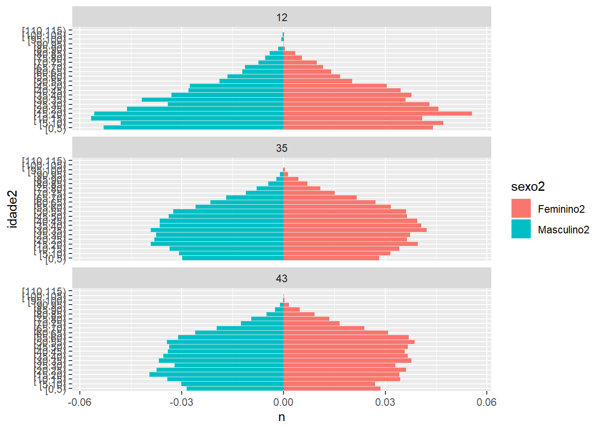

Em linhas gerais, um banco de dados é “tidy” quando cada linha representa uma observação/caso e quando cada coluna representa apenas uma variável.
O pacote tem quatro funções: - unite() transforma várias colunas em uma única coluna através de uma colagem das “strings” das colunas distintas. - separate() transforma uma coluna em várias colunas distintas através de um recorte nas “strings” da coluna original. Pode ser pela posição ou por alguma regra de separação. - pivot_longer() transforma múltiplas colunas em duas colunas. Uma das colunas vai guardar os nomes das variáveis que foram unidas, e a outra vai guardar os valores das células transformadas. - pivot_wider() transforma duas colunas, uma de nomes e outra de valores, em múltiplas colunas, uma para cada nome, com os valores nas células.
pivot_longer() e pivot_wider() não são perfeitamente simétricas? Considere o exemplo a seguir:stocks <- tibble(
year = c(2015, 2015, 2016, 2016),
half = c( 1, 2, 1, 2),
return = c(1.88, 0.59, 0.92, 0.17)
)
stocks %>%
pivot_wider(names_from = year, values_from = return) %>%
pivot_longer(`2015`:`2016`, names_to = "year", values_to = "return")## # A tibble: 4 x 3
## half year return
## <dbl> <chr> <dbl>
## 1 1 2015 1.88
## 2 1 2016 0.92
## 3 2 2015 0.59
## 4 2 2016 0.17Vejamos cada objeto intermediário para entender o que ocorre.
## # A tibble: 4 x 3
## year half return
## <dbl> <dbl> <dbl>
## 1 2015 1 1.88
## 2 2015 2 0.59
## 3 2016 1 0.92
## 4 2016 2 0.17## # A tibble: 2 x 3
## half `2015` `2016`
## <dbl> <dbl> <dbl>
## 1 1 1.88 0.92
## 2 2 0.59 0.17stocks %>%
pivot_wider(names_from = year, values_from = return) %>%
pivot_longer(`2015`:`2016`, names_to = "year", values_to = "return")## # A tibble: 4 x 3
## half year return
## <dbl> <chr> <dbl>
## 1 1 2015 1.88
## 2 1 2016 0.92
## 3 2 2015 0.59
## 4 2 2016 0.17As funções não são simétricas porque você pode gerar um tipo de dado diferente nas colunas dependendo da entrada original do dado. Lembre-se que os nomes das colunas são sempre STRINGS, mas as vezes os nomes das suas colunas são números ou datas ou outro tipo de dado não-string. É pra isso que serve o argumento names_ptypes = list(year = double()) da pivot_longer().
stocks %>%
pivot_wider(names_from = year, values_from = return) %>%
pivot_longer(
`2015`:`2016`,
names_to = "year",
values_to = "return",
names_ptypes = list(year = double()) # Esse aqui
)## # A tibble: 4 x 3
## half year return
## <dbl> <dbl> <dbl>
## 1 1 2015 1.88
## 2 1 2016 0.92
## 3 2 2015 0.59
## 4 2 2016 0.17pessoas <- tribble(
~nome, ~nomes, ~valores,
#------------------|--------|--------
"Felipe Madeira", "idade", 45,
"Felipe Madeira", "altura", 186,
"Felipe Madeira", "idade", 50,
"Jéssica Cordeiro", "idade", 37,
"Jéssica Cordeiro", "altura", 156
)Essa aqui o Rignaldo matou a charada na segunda feira. O problema é que Felipe Madeira tem duas entradas de idade. Então, temos que tomar uma decisão. A minha solução original era identificar unicamente cada entrada do felipe através de uma variável “id”.
pessoas$id <- c(1, 1, 2, 3, 3)
pivot_wider(
pessoas,
id_cols = c(id, nome),
names_from = nomes,
values_from = valores
)## # A tibble: 3 x 4
## id nome idade altura
## <dbl> <chr> <dbl> <dbl>
## 1 1 Felipe Madeira 45 186
## 2 2 Felipe Madeira 50 NA
## 3 3 Jéssica Cordeiro 37 156A solução do Rignaldo foi usar uma função para escolher um dos dois valores, no caso, o mais alto. O que pode ser feito como argumento values_fn.
## # A tibble: 2 x 3
## nome idade altura
## <chr> <dbl> <dbl>
## 1 Felipe Madeira 50 186
## 2 Jéssica Cordeiro 37 156Para que essa tabela fique “tidy”, você precisa lembrar o que é considerado uma variável. Masculino e feminino podem até ser colunas diferentes num banco de dados, mas as duas representam valores de uma mesma variável, que é o sexo! Logo, precisamos “alongar” o banco, pra transformar duas colunas e uma com pivot_longer().
## # A tibble: 4 x 3
## gravida sexo n
## <chr> <chr> <dbl>
## 1 sim masc NA
## 2 sim fem 10
## 3 não masc 20
## 4 não fem 12## Warning: Expected 3 pieces. Additional pieces discarded in 1 rows [2].## # A tibble: 3 x 3
## one two three
## <chr> <chr> <chr>
## 1 a b c
## 2 d e f
## 3 h i j## Warning: Expected 3 pieces. Missing pieces filled with `NA` in 1 rows [2].## # A tibble: 3 x 3
## one two three
## <chr> <chr> <chr>
## 1 a b c
## 2 d e <NA>
## 3 f g iA chave aqui é você pensar em como separar colunas que tem tamanhos diferentes. No caso, o mundo ideal é o que todas as colunas tem o mesmo tamanho, assim, não falta nenhuma peça no nosso quebra-cabeça. Mas o que fazer quando isso não é o caso? Veja as mensagens de aviso em cada exemplo.
No primeiro caso, ele esperava 3 pedaços, então o quarto pedaço “g”, na segunda linha, foi descartado. No segundo caso, ele esperava 3 pedaços, então na segunda linha onde apenas dois foram oferecidos, o faltante ficou NA.
Assim, os argumentos extra e fill informam a função o que deve ser feito com os pedaços que sobram ou faltam.
# Padrão
tibble(x = c("a,b,c", "d,e,f,g", "h,i,j")) %>%
separate(x, c("one", "two", "three"), extra = "warn")## Warning: Expected 3 pieces. Additional pieces discarded in 1 rows [2].## # A tibble: 3 x 3
## one two three
## <chr> <chr> <chr>
## 1 a b c
## 2 d e f
## 3 h i j# Apague
tibble(x = c("a,b,c", "d,e,f,g", "h,i,j")) %>%
separate(x, c("one", "two", "three"), extra = "drop")## # A tibble: 3 x 3
## one two three
## <chr> <chr> <chr>
## 1 a b c
## 2 d e f
## 3 h i j# Junte com o último pedaço
tibble(x = c("a,b,c", "d,e,f,g", "h,i,j")) %>%
separate(x, c("one", "two", "three"), extra = "merge")## # A tibble: 3 x 3
## one two three
## <chr> <chr> <chr>
## 1 a b c
## 2 d e f,g
## 3 h i j# Avise que faltou e preencha com NA a direita.
tibble(x = c("a,b,c", "d,e", "f,g,i")) %>%
separate(x, c("one", "two", "three"), fill = "warn")## Warning: Expected 3 pieces. Missing pieces filled with `NA` in 1 rows [2].## # A tibble: 3 x 3
## one two three
## <chr> <chr> <chr>
## 1 a b c
## 2 d e <NA>
## 3 f g i# Preencha com NA a direita
tibble(x = c("a,b,c", "d,e", "f,g,i")) %>%
separate(x, c("one", "two", "three"), fill = "right")## # A tibble: 3 x 3
## one two three
## <chr> <chr> <chr>
## 1 a b c
## 2 d e <NA>
## 3 f g i# Preencha com NA a esquerda
tibble(x = c("a,b,c", "d,e", "f,g,i")) %>%
separate(x, c("one", "two", "three"), fill = "left")## # A tibble: 3 x 3
## one two three
## <chr> <chr> <chr>
## 1 a b c
## 2 <NA> d e
## 3 f g iVou importar o código da aula:
library(readr)
colunas <- fwf_cols(
ano = c(1, 4),
uf = c(5, 6),
sexo = 18,
idade = c(27, 29),
peso = c(791, 795)
)
tipos <- cols(
ano = col_factor(),
uf = col_factor(),
sexo = col_factor(),
idade = col_integer(),
peso = col_double()
)
pnad <- read_fwf(
file = "pnad2015/Dados/PES2015.gz",
col_positions = colunas,
col_types = tipos
)
pnad$sexo <- factor(pnad$sexo, labels = c("Masculino", "Feminino"))Vou fazer uma alteração no cálculo dos totais. Antes, havia calculado um total para todo o país, agora, vou calcular um total para cada UF.
##
## Attaching package: 'dplyr'## The following objects are masked from 'package:stats':
##
## filter, lag## The following objects are masked from 'package:base':
##
## intersect, setdiff, setequal, unionpir_et <- pnad %>%
mutate(idade2 = cut(idade, seq(0, max(idade), 5), right = FALSE)) %>%
group_by(uf, sexo, idade2) %>%
count(wt = peso)## Warning: Factor `idade2` contains implicit NA, consider using
## `forcats::fct_explicit_na`
## Warning: Factor `idade2` contains implicit NA, consider using
## `forcats::fct_explicit_na`## Warning: Factor `idade2` contains implicit NA, consider using
## `forcats::fct_explicit_na`(pir_et <- pir_et %>%
group_by(uf) %>%
summarise(total = sum(Masculino, na.rm = T) + sum(Feminino, na.rm = T)) %>%
left_join(pir_et))## Joining, by = "uf"## # A tibble: 569 x 5
## uf total idade2 Masculino Feminino
## <fct> <dbl> <fct> <dbl> <dbl>
## 1 11 1772941 [0,5) 72406 58635
## 2 11 1772941 [5,10) 75120 68633
## 3 11 1772941 [10,15) 76727 72399
## 4 11 1772941 [15,20) 87809 76192
## 5 11 1772941 [20,25) 68894 74298
## 6 11 1772941 [25,30) 72406 74843
## 7 11 1772941 [30,35) 69445 69702
## 8 11 1772941 [35,40) 68632 82134
## 9 11 1772941 [40,45) 62152 64842
## 10 11 1772941 [45,50) 57817 58364
## # ... with 559 more rows(pir_et <- pir_et %>%
ungroup() %>%
mutate(Masculino2 = (Masculino / total) * -1,
Feminino2 = Feminino / total))## # A tibble: 569 x 7
## uf total idade2 Masculino Feminino Masculino2 Feminino2
## <fct> <dbl> <fct> <dbl> <dbl> <dbl> <dbl>
## 1 11 1772941 [0,5) 72406 58635 -0.0408 0.0331
## 2 11 1772941 [5,10) 75120 68633 -0.0424 0.0387
## 3 11 1772941 [10,15) 76727 72399 -0.0433 0.0408
## 4 11 1772941 [15,20) 87809 76192 -0.0495 0.0430
## 5 11 1772941 [20,25) 68894 74298 -0.0389 0.0419
## 6 11 1772941 [25,30) 72406 74843 -0.0408 0.0422
## 7 11 1772941 [30,35) 69445 69702 -0.0392 0.0393
## 8 11 1772941 [35,40) 68632 82134 -0.0387 0.0463
## 9 11 1772941 [40,45) 62152 64842 -0.0351 0.0366
## 10 11 1772941 [45,50) 57817 58364 -0.0326 0.0329
## # ... with 559 more rows(pir_et2 <- pivot_longer(
data = pir_et,
cols = c(Masculino2, Feminino2),
names_to = "sexo2",
values_to = "n"
))## # A tibble: 1,138 x 7
## uf total idade2 Masculino Feminino sexo2 n
## <fct> <dbl> <fct> <dbl> <dbl> <chr> <dbl>
## 1 11 1772941 [0,5) 72406 58635 Masculino2 -0.0408
## 2 11 1772941 [0,5) 72406 58635 Feminino2 0.0331
## 3 11 1772941 [5,10) 75120 68633 Masculino2 -0.0424
## 4 11 1772941 [5,10) 75120 68633 Feminino2 0.0387
## 5 11 1772941 [10,15) 76727 72399 Masculino2 -0.0433
## 6 11 1772941 [10,15) 76727 72399 Feminino2 0.0408
## 7 11 1772941 [15,20) 87809 76192 Masculino2 -0.0495
## 8 11 1772941 [15,20) 87809 76192 Feminino2 0.0430
## 9 11 1772941 [20,25) 68894 74298 Masculino2 -0.0389
## 10 11 1772941 [20,25) 68894 74298 Feminino2 0.0419
## # ... with 1,128 more rowsAqui, vou selecionar minhas 3 UFs.
Faço uma pequena modificação para exibir um painel por UF
library(ggplot2)
ggplot(pir_et2, aes(idade2, n, fill = sexo2)) +
facet_wrap(~ uf, nrow = 3) +
geom_col() +
coord_flip()## Warning: Removed 3 rows containing missing values (position_stack).
Essa questão é aberta, mas o mínimo seria mudar os títulos dos eixos, os nomes nas legendas, colocar um título e citar a fonte.